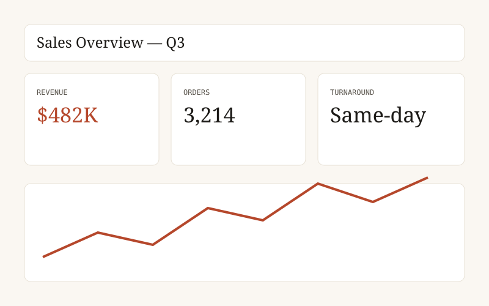

01 — Business Intelligence
Enterprise Sales Dashboard
A SQL-backed Power BI dashboard for a retail/logistics scenario, cutting reporting turnaround from three days to same-day.
SQLPower BIData Modeling
Read more →